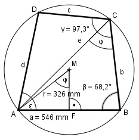

Aufgabe 156 Wie groß ist die Seite d des Sehnenvierecks?

Im Dreieck AFM: a/2 546/2 mm sin φ = ------ = ----------- = 0,8374 r 326 mm --> φ = 56,9° φ ist der halbe Mittelpunktswinkel der Sehne AC und somit der Umfangswinkel im Dreieck ABC bei C. Im Dreieck ABC: Fall SWW: Sinussatz: e a -------- = ------- |*sin β sin β sin φ a * sin β e = ----------- = sin φ 546 mm * sin 68,2° 546 mm * 0,9285 = -------------------- = ------------------ = sin 56,9° 0,8377 = 605,2 mm Im Dreieck ACD: Fall SWW: Sinussatz: e d ---------------- = ------------- | *sin (γ – φ) sin (180° - β) sin (γ – φ) e * sin (γ – φ) ----------------- = d sin (180° - β) 605,2 mm * sin (97,3° - 56,9°) d = ---------------------------------- = sin (180° - 68,2°) 605,2 mm * sin 40,4° = ---------------------- = sin 111,8° 605,2 mm * 0,6481 = -------------------- = 422,2 mm 0,9285